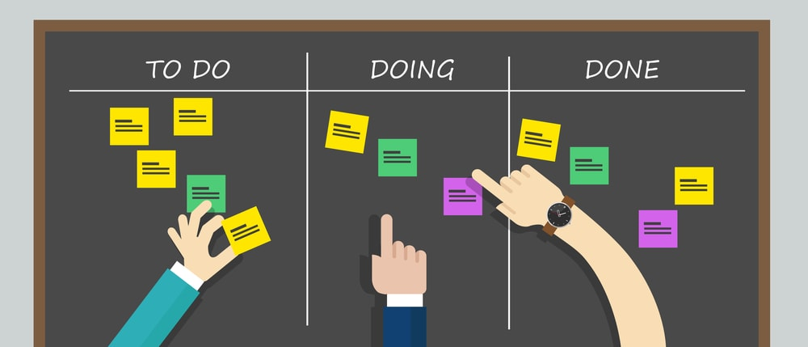

Bienvenido a Crystal

Que es cristal?
Crystal es una metodología ágil que pone a las personas en el centro del proceso de desarrollo de software. A diferencia de otros enfoques que pueden sentirse rígidos o complicados, Crystal se basa en la idea de que cada equipo y proyecto es único, y que el proceso debe adaptarse a esa realidad. En lugar de imponer un solo camino, Crystal ofrece la flexibilidad necesaria para que cada equipo encuentre su propio ritmo, permitiendo que la comunicación fluya y que las soluciones emerjan de manera natural. Es un enfoque que respeta la diversidad de equipos y proyectos, y que entiende que, al final del día, son las personas quienes hacen que las cosas sucedan.